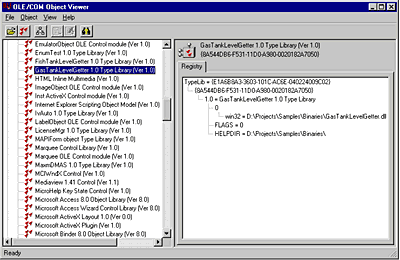
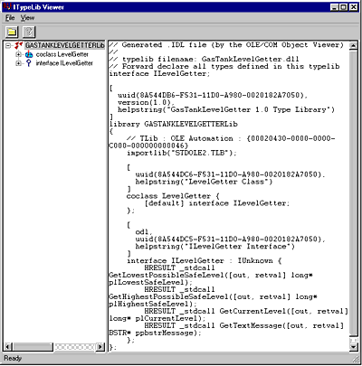
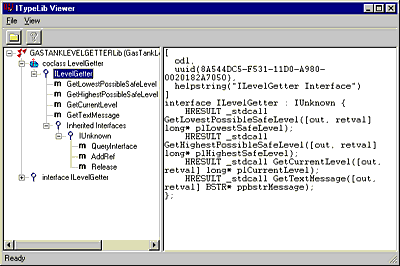
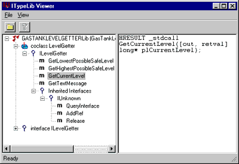
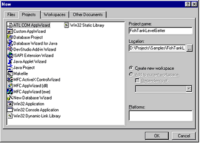
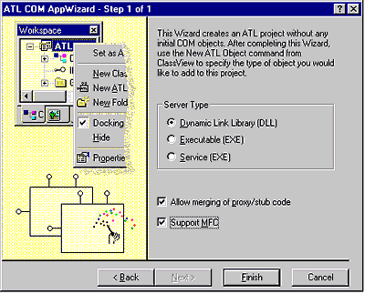
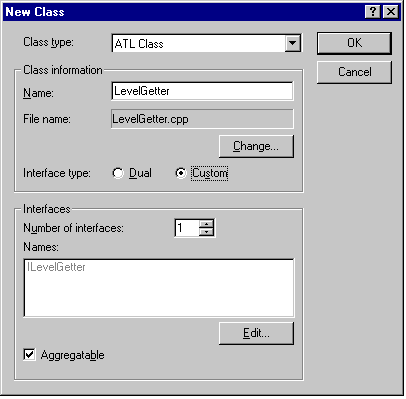
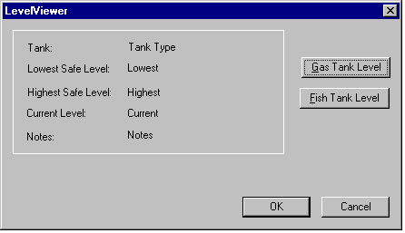

| ||||
Steve Robinson and Alex Krassel
Panther Software
August 8, 1997
(See the Overview for a full table of contents and downloadable Microsoft Word version of this article with samples.)
In the Richy Rich story above, we saw how the fish tank DLL and the gas tank DLL could not reside on the same computer, because neither the client application nor the two DLLs were COM components. Whichever DLL was copied to the computer last would be the one utilized by the client application. As we have seen, utilizing the incorrect DLL could to lead to disastrous results: a helicopter crash. We suggested that the software developer could have used COM and had both DLLs on the machine. Because the two DLLs would be distinguishable by their CLSIDs, they could be utilized within one single application. With COM, both DLLs would expose identical methods, through interfaces, and would be interchangeable.
To prove this point, we are going to create a single GUI application that utilizes and displays information taken from two different COM servers, GasTankLevelGetter DLL and FishTankLevelGetter DLL. We will also create one application that will get information from each COM DLL and display the data. Requests to each COM DLL will be toggled intermittently by a four-second timer. To emphasize immutable interfaces and that COM is a binary standard, we are going to write the GUI application and the FishTankLevelGetter COM DLL entirely based on information in the GasTankLevelGetter COM DLL. However, we are not going to give you the source code to the GasTankLevelGetter COM DLL. If you download the sample code, you will find the GasTankLevelGetter COM DLL in the binaries folder. We are not even going to tell you whether GasTankLevelGetter was built with Delphi, Visual C++, Java, Cobol, Turbo Pascal, or Visual Basic. You will, however, have to register the GasTankLevelGetter DLL with RegSvr32.
Once you have registered GasTankLevelGetter DLL with RegSvr32, you are ready to start with OLE/COM Object Viewer. If you are using Visual C++ 5.0, OLE/COM Object Viewer is located in the Visual C++ 5.0 program group under Start | Programs in the Explorer desktop shell. If you do not have OLE/COM Object Viewer, download it from http://www.microsoft.com/oledev/  and run the application.
and run the application.
Once you have started OLE/COM Object Viewer, click View | Expert mode to view Type Libraries. Scroll down the tree and open the folder titled Type Libraries. Scroll down this folder until you find GasTankLevelGetter 1.0 TypeLibrary (Ver 1.0). When the tree item is selected, the view on the right provides the type library ID and the path to the server, as seen in the screen shot below.

Double-clicking the GasTankLevelGetter entry brings up a window showing the complete type library. This information is generated from registry entries that were created when you registered the DLL. TypeLib information is kept under HKEY_CLASSES_ROOT \ TypeLib.

The coclass statement provides a list of the supported interfaces for a component object. An object can have any number of interfaces listed in its body, specifying the full set of interfaces that the object implements, both incoming and outgoing. A quick look at the coclass entry shows the COM object's CLSID and Interface:
CLSID: 8A544DC6-F531-11D0-A980-0020182A7050
Interface Name: ILevelGetter
[
uuid(8A544DC6-F531-11D0-A980-0020182A7050),
helpstring("LevelGetter Class")
]
coclass LevelGetter {
[default] interface ILevelGetter;
};
By extracting the interface information just below the coclass, we can determine:
[
odl,
uuid(8A544DC5-F531-11D0-A980-0020182A7050),
helpstring("ILevelGetter Interface")
]
interface ILevelGetter : IUnknown {
HRESULT _stdcall GetLowestPossibleSafeLevel([out, retval] long*
plLowestSafeLevel);
HRESULT _stdcall GetHighestPossibleSafeLevel([out, retval]
long* plHighestSafeLevel);
HRESULT _stdcall GetCurrentLevel([out, retval] long*
plCurrentLevel);
HRESULT _stdcall GetTextMessage([out, retval] BSTR*
ppbstrMessage);
};
A more detailed look at the items in the type library verifies the methods and our interface IDs.


Now that we know how to construct the ILevelGetter Interface, let's create our own COM component with this information. If you desire to work with the existing sample, all source code is located in the LevelViewer folder. Start Visual C++ 5.0, and create a new project. Specify ATLComAppWizard as the project type and "FishTankLevelGetter" as the project name. We suggest you create a new project folder. The New Project Dialog should look like the dialog below.

In Step 1 of 1 in the AppWizard, choose Dynamic Link Library (DLL) as the Server Type. Check both Allow merging of proxy/stub code and Support MFC.

Once you have created the new FishTankLevelGetter project, choose Insert | New Class… from the menu to create a new ATL class. You can specify anything you desire as the class name but be sure the Interface is named ILevelGetter and the interface type is Custom, which implies that ILevelGetter will be derived from IUnknown. Had ILevelGetter in the GasTankLevelGetter COM DLL been derived from IDispatch, we would have selected Interface type Dual, which would cause the new interface to be derived from IDispatch. If your New Class dialog looks like the one below, click OK to create the new class.

The next step is to edit the FishTankLevelGetter.IDL file. In the IDL file, you should have the new ILevelGetter interface derived from IUnknown. If you are working with the samples, you will see the following code, which contains the four identical immutable methods of ILevelGetter that appeared in GasTankLevelGetter's ILevelGetter interface.
[
object,
uuid(7F0DFAA2-F56D-11D0-A980-0020182A7050),
helpstring("ILevelGetter Interface"),
pointer_default(unique)
]
interface ILevelGetter : IUnknown
{
HRESULT GetLowestPossibleSafeLevel([out, retval] long* plLowestSafeLevel);
HRESULT GetHighestPossibleSafeLevel([out, retval] long* plHighestSafeLevel);
HRESULT GetCurrentLevel([out, retval] long* plCurrentLevel);
HRESULT GetTextMessage([out, retval] BSTR* ppbstrMessage);
};
If you are writing the code as we go along, you will want to add the code above so that your interface implements the four identical immutable methods. The easy way to add the code is to copy and paste directly from the ITypeLib Viewer window that was shown earlier. Your code should look exactly the same as the sample, with the exception of the Interface ID (uuid entry).
Open LevelGetter.H, and declare the four methods in the class. Your class declaration should appear like the one below, which adds the four new methods.
class LevelGetter :
public ILevelGetter,
public CComObjectRoot,
public CComCoClass<LevelGetter,&CLSID_LevelGetter>
{
public:
LevelGetter(){}
BEGIN_COM_MAP(LevelGetter)
COM_INTERFACE_ENTRY(ILevelGetter)
END_COM_MAP()
//DECLARE_NOT_AGGREGATABLE(LevelGetter)
// Remove the comment from the line above if you don't want your object to
// support aggregation.
DECLARE_REGISTRY_RESOURCEID(IDR_LevelGetter)
// ILevelGetter
public: //THE FOUR NEW METHODS
STDMETHOD (GetLowestPossibleSafeLevel) (long* plLowestSafeLevel);
STDMETHOD (GetHighestPossibleSafeLevel) (long* plHighestSafeLevel);
STDMETHOD (GetCurrentLevel) (long* plCurrentLevel);
STDMETHOD (GetTextMessage) (BSTR* ppbstrMessage);
};
You now need to implement the four methods. For demonstration purposes, let's keep the methods simple. Implement them any way you desire, or copy the following code from the samples.
//---------------------------------------------------------------------------
STDMETHODIMP LevelGetter::GetLowestPossibleSafeLevel(long* plLowestSafeLevel)
{
*plLowestSafeLevel = 70;
return S_OK;
}
//---------------------------------------------------------------------------
STDMETHODIMP LevelGetter::GetHighestPossibleSafeLevel(long* plHighestSafeLevel)
{
*plHighestSafeLevel = 98;
return S_OK;
}
//---------------------------------------------------------------------------
STDMETHODIMP LevelGetter::GetCurrentLevel(long* plCurrentLevel)
{
*plCurrentLevel = 94;
return S_OK;
}
//---------------------------------------------------------------------------
STDMETHODIMP LevelGetter::GetTextMessage(BSTR* ppbstrMessage)
{
*ppbstrMessage = ::SysAllocString(L"All clear, water level is fine");
return S_OK;
}
When you have implemented the methods, compile and link your COM DLL. Then we can begin to create a client application.
We are going to create a client application that simultaneously supports the two COM objects GasTankLevelGetter and FishTankLevelGetter. Using AppWizard, create an MFC Dialog based application that supports both Automation and ActiveX controls (check boxes during the AppWizard process).
Once you have created your application, edit your main dialog in the resource editor, so it resembles the following:

Note: You may want to review the control IDs in the sample code, because we are going to change the values of the entries.
The next step is to add message handlers for the two new push buttons, Gas Tank Level and Fish Tank Level. In the sample code, these methods are called OnGas and OnFish, respectively.
Once you have created the dialog class and added the message handlers for the push buttons, you need to open the class and add a few additional members and methods. The first thing we do is forward declare interface ILevelGetter so that we can have a class member of this interface type. The second step is to add the two additional class methods, ClearMembers and SetNewData, and class members m_pILevelGetter and m_sLastCalled. Then use Class Wizard to add the methods OnDestroy and OnTimer. Once this is complete, your class declaration should be similar to the following class declaration shipped as sample code.
//forward declaration so for our class member
interface ILevelGetter;
class CLevelViewerDlg : public CDialog
{
DECLARE_DYNAMIC(CLevelViewerDlg);
friend class CLevelViewerDlgAutoProxy;
public:
CLevelViewerDlg(CWnd* pParent = NULL); // standard constructor
virtual ~CLevelViewerDlg();
//{{AFX_DATA(CLevelViewerDlg)
enum { IDD = IDD_LEVELVIEWER_DIALOG };
//}}AFX_DATA
//{{AFX_VIRTUAL(CLevelViewerDlg)
protected:
virtual void DoDataExchange(CDataExchange* pDX); // DDX/DDV support
//}}AFX_VIRTUAL
// Implementation
protected:
CLevelViewerDlgAutoProxy* m_pAutoProxy;
HICON m_hIcon;
BOOL CanExit();
//added by manually typing these into the class
void ClearMembers();
void SetNewData(const CLSID& clsid, const IID& iid);
ILevelGetter* m_pILevelGetter;
CString m_sLastCalled;
// Generated message map functions
//{{AFX_MSG(CLevelViewerDlg)
virtual BOOL OnInitDialog();
afx_msg void OnPaint();
afx_msg HCURSOR OnQueryDragIcon();
afx_msg void OnClose();
virtual void OnOK();
virtual void OnCancel();
//added by the Class Wizard
afx_msg void OnFish();
afx_msg void OnGas();
afx_msg void OnDestroy();
afx_msg void OnTimer(UINT nIDEvent);
//}}AFX_MSG
DECLARE_MESSAGE_MAP()
};
The next step is to modify the implementation file. In the class constructor, initialize the member variables so the constructor appears as follows:
//--------------------------------------------------------------
CLevelViewerDlg::CLevelViewerDlg(CWnd* pParent /*=NULL*/)
: CDialog(CLevelViewerDlg::IDD, pParent)
{
//{{AFX_DATA_INIT(CLevelViewerDlg)
//}}AFX_DATA_INIT
m_hIcon = AfxGetApp()->LoadIcon(IDR_MAINFRAME);
m_pAutoProxy = NULL;
m_pILevelGetter = NULL;
m_sLastCalled = _T("CheckedGas");
}
Implement the ClearMembers method as noted below. This function clears the dialog controls. (Note that we could have used Dialog Data exchange with class members.)
//--------------------------------------------------------------------
void CLevelViewerDlg::ClearMembers()
{
CWnd* pWnd = GetDlgItem(IDC_TANK_TYPE);
if(pWnd != NULL)
pWnd->SetWindowText("");
pWnd = GetDlgItem(IDC_LOWEST_SAFE);
if(pWnd != NULL)
pWnd->SetWindowText("");
pWnd = GetDlgItem(IDC_HIGHEST_SAFE);
if(pWnd != NULL)
pWnd->SetWindowText("");
pWnd = GetDlgItem(IDC_CURRENT);
if(pWnd != NULL)
pWnd->SetWindowText("");
pWnd = GetDlgItem(IDC_MESSAGE);
if(pWnd != NULL)
pWnd->SetWindowText("");
}
OnDestroy, shown below, is used to clean up when the dialog is destroyed.
//--------------------------------------------------------------------
void CLevelViewerDlg::OnDestroy()
{
CDialog::OnDestroy();
KillTimer(1);
}
The class uses OnTimer to call the two push button methods, OnFish and OnGas, so that data is updated without the user having to click a push button.
//--------------------------------------------------------------------
void CLevelViewerDlg::OnTimer(UINT nIDEvent)
{
if(m_sLastCalled == _T("CheckedFish"))
OnGas();
else
OnFish();
}
Note: In the real world, it would be more appropriate to use push technology and the IConnectionPoint interface. A complete working sample of using IConnectionPoint and push technology is available at http://www.microsoft.com/com/overview-f.htm.
The virtual function OnInitDialog is used primarily for starting the timer, although it also retrieves data from the GasTankLevelGetter COM DLL.
//--------------------------------------------------------------------
BOOL CLevelViewerDlg::OnInitDialog()
{
CDialog::OnInitDialog();
SetIcon(m_hIcon, TRUE); // Set big icon
SetIcon(m_hIcon, FALSE); // Set small icon
OnGas(); //obtain data
SetTimer(1, 4000, NULL); //set timer for 4 seconds
return TRUE; // return TRUE unless you set the focus to a control
}
Now we are ready to implement our two push button methods, OnFish and OnGas, which are called intermittently every four seconds. Both of these functions are identical in procedure; they pass a CLSID and IID to SetNewData. The only difference is that the CLSID and IID passed by OnGas are for GasTankLevelGetter, and the CLSID and IID passed by OnFish are for FishTankLevelGetter.
OnGas retrieves the CLSID based on the string GUID that appeared with the coclass in the TypeLib information. The IID is retrieved in a similar manner based on the interface entry in the TypeLib information also shown in the OLE/COM Object Viewer. Once the GUIDs are retrieved, SetNewData is called.
//--------------------------------------------------------------------
void CLevelViewerDlg::OnGas()
{
m_sLastCalled = _T("CheckedGas");
CLSID clsid;
IID iid;
HRESULT hRes;
hRes = AfxGetClassIDFromString(
"{8A544DC6-F531-11D0-A980-0020182A7050}",
&clsid);
if(SUCCEEDED(hRes))
{
hRes = AfxGetClassIDFromString(
"{8A544DC5-F531-11D0-A980-0020182A7050}", &iid);
if(SUCCEEDED(hRes))
SetNewData(clsid, iid);
}
}
The SetNewData method shown below creates an instance of either the GasTankLevelGetter COM object or the FishTankLevelGetter COM object, depending on the CLSID utilized. Once the COM object is instantiated, SetNewData calls methods in the interface ILevelGetter to obtain data.
//--------------------------------------------------------------------
void CLevelViewerDlg::SetNewData(const CLSID& clsid, const IID& iid)
{
ClearMembers();
ASSERT(m_pILevelGetter == NULL);
HRESULT hRes = CoCreateInstance(clsid, NULL, CLSCTX_ALL,
iid, (void**)&m_pILevelGetter);
if(!SUCCEEDED(hRes))
{
m_pILevelGetter = NULL;
return;
}
long lLowestSafeLevel, lHighestSafeLevel, lCurrentLevel;
BSTR bstrMessage = NULL;
m_pILevelGetter->GetLowestPossibleSafeLevel(&lLowestSafeLevel);
m_pILevelGetter->GetHighestPossibleSafeLevel(&lHighestSafeLevel);
m_pILevelGetter->GetCurrentLevel(&lCurrentLevel);
m_pILevelGetter->GetTextMessage(&bstrMessage);
m_pILevelGetter->Release();
m_pILevelGetter = NULL;
CString sLowest, sHighest, sCurrent, sMessage;
sLowest.Format("%d",lLowestSafeLevel);
sHighest.Format("%d",lHighestSafeLevel);
sCurrent.Format("%d",lCurrentLevel);
sMessage = bstrMessage;
::SysFreeString(bstrMessage);
CString sItem;
if(m_sLastCalled == _T("CheckedFish"))
{
//we are checking the fish tank now
sItem = _T("Fish Tank");
}
else //m_sLastCalled == _T("CheckedGas")
{
//we are checking the fish tank now
sItem = _T("Gas Tank");
}
CWnd* pWnd = GetDlgItem(IDC_TANK_TYPE);
if(pWnd != NULL)
pWnd->SetWindowText(sItem);
pWnd = GetDlgItem(IDC_LOWEST_SAFE);
if(pWnd != NULL)
pWnd->SetWindowText(sLowest);
pWnd = GetDlgItem(IDC_HIGHEST_SAFE);
if(pWnd != NULL)
pWnd->SetWindowText(sHighest);
pWnd = GetDlgItem(IDC_CURRENT);
if(pWnd != NULL)
pWnd->SetWindowText(sCurrent);
pWnd = GetDlgItem(IDC_MESSAGE);
if(pWnd != NULL)
pWnd->SetWindowText(sMessage);
}
Because the interfaces are the same, we are assured that the methods will work with both COM objects. The final two steps are to implement OnFish and to include an interface definition.
//--------------------------------------------------------------------
void CLevelViewerDlg::OnFish()
{
m_sLastCalled = _T("CheckedFish");
CLSID clsid;
IID iid;
HRESULT hRes = AfxGetClassIDFromString(
"{7F0DFAA3-F56D-11D0-A980-0020182A7050}", &clsid);
if(SUCCEEDED(hRes))
hRes = AfxGetClassIDFromString(
"{7F0DFAA2-F56D-11D0-A980-0020182A7050}", &iid);
if(SUCCEEDED(hRes))
StNwData(clsid, iid);
}
The interface definition, made up of pure virtual members, is included at the top of our implementation file (although it can also be in the class declaration file or a separate .h file) so that our class member m_pILevelGetter of type ILevelGetter* knows its methods. The interface declaration appears below:
//------------------------------------------------------------------
interface ILevelGetter : public IUnknown
{
public:
virtual HRESULT STDMETHODCALLTYPE GetLowestPossibleSafeLevel(long*
plLowestSafeLevel) = 0;
virtual HRESULT STDMETHODCALLTYPE GetHighestPossibleSafeLevel(long*
plLowestSafeLevel) = 0;
virtual HRESULT STDMETHODCALLTYPE GetCurrentLevel(long* plLowestSafeLevel) = 0;
virtual HRESULT STDMETHODCALLTYPE GetTextMessage(BSTR* pbstrMessage) = 0;
};
We are now ready to compile, link, and run the application. When you run the application, you have the option of clicking the push buttons to swap the COM components, or allowing the timer to change them every four seconds. You are now dynamically interchanging machine parts as prescribed by the Industrial Revolution. Only now can Richy Rich fly his helicopter and monitor his fish tank without worries.
Did you find this material useful? Gripes? Compliments? Suggestions for other articles? Write us!
© 1999 Microsoft Corporation. All rights reserved. Terms of use.